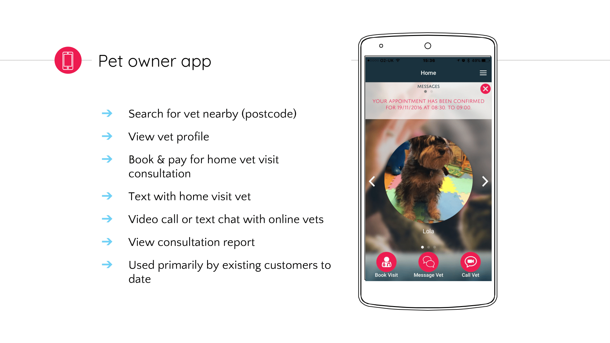
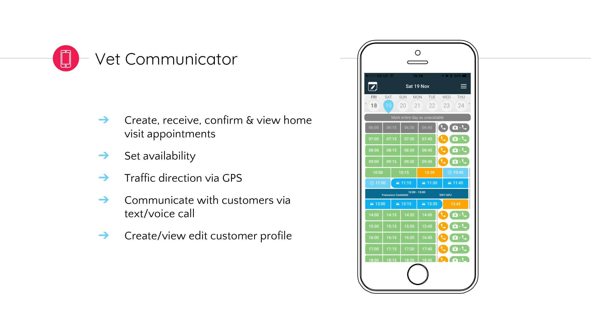
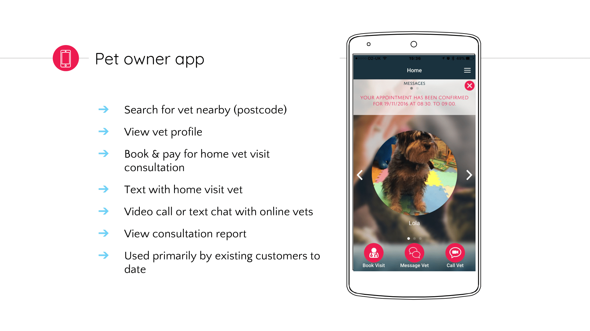
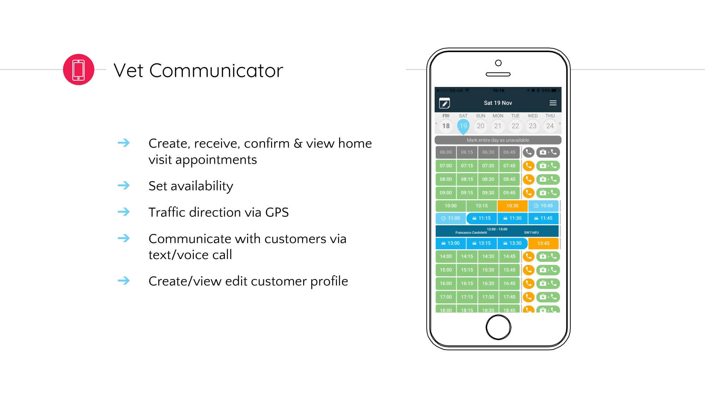

PawSquad
An innovative veterinary platform combining digital and home visit services to deliver convenient, personalised, and stress-free care to our pet patients - day or night

Project Overview
About the project
Currently, the veterinary relationship is structured around the vet, not the owner. Each vet starts and maintains individual relationships with key suppliers, taking time and resource away from patient care. Meanwhile, the pet owner has to independently manage relationships with insurers, specialists and wellbeing services for their pets. All data exists in silos.
PawSquad builds entirely on restructuring the veterinary relationship to revolve around the pet owner, not the vet: A customer centric platform that redefines veterinary care.
By having one point of contact, the home visit vet, services can be pulled in as needed to support that relationship. Meanwhile, we manage the supplier relationships on behalf of our vets, giving them more time to focus on care - and creating greater efficiency, reduced costs, and scalability for us as an organisation.
The challenge is to develop a service that has true value for the end user is to keep pace with the ever-changing market reality that affects the veterinary industry and shapes the user's behaviour.
My role
My main duty is to improve how the user feels when using the product and refactor the site following the brand guidelines.
Reviewing - Analysing the collected data to understand how the User is behaving when interacting with our service.
Planning & Design - Assessing the results from the review stage to find out how to address the User's demands and increase User satisfaction & Brand loyalty.
Prototyping - Building prototypes to demonstrate the features of the app and present the storytelling to the rest of the team.
Testing - Assessing the value that the design adds to our service and evaluating the interaction between the user and the interface.
Other duties included:
Working with internal stakeholders and external clients collaboratively to identify areas of improvement and opportunities for new features;
Conducting appropriate market & user research to improve the overall feel of the product;
Understanding the nuanced customer requirements and breaking them into smaller pieces to be prioritized by the team in terms of importance;
Designing for both web and the print, delivering a service that is aligned with the Brand;
Creating UI (mobile-first) designs for all screen sizes;
Researching ways to increase the conversion rate and maintain customer retention;
Working with customers to gain insights on adjacent needs and problems;
Working closely with the Marketing Team to launch digital and print campaigns;
Supporting the go-to-market activities to successfully position PawSquad in the market.
Pawsquad service
PawSquad is a veterinary platform that connects pet owners to independent veterinary professionals across multiple touch points. In doing so, we offer pet owners around the clock, convenient and affordable vet care to their doorstep, delivered by a network of mobile vets and online consultants. Vets working with PawSquad benefit from a low-risk model of owning their own practice, and a unique model of flexible working.
Our proprietary technology is at the core of our business; it enables the seamless communication between pet owners and our clinical network, improves compliance and clinical outcomes, and provides quick and accurate payment processing while reducing human capital costs.
Vision
To create and operate the world's largest and most forward-thinking veterinary practice without employing one single vet.
Key benefits
High quality, patient-centric veterinary care - Identify and work with experienced vets nationally who are passionate about great patient care, and providing a new and improved veterinary experience.
Optimal pet owner convenience to drive compliance - Deliver a pet owner value proposition that focuses on availability outside normal hours, convenience, and ease of use to achieve an initial competitive advantage.
Enhanced professional work/life balance for vets
Tech & Data - The first fully connected data solution for the industry leverage technological expertise to create market leading UX and service, as well as drive data capture that serves to continually improve and expand service offering.
The veterinary platform
PawSquad combines strong tech and data with the best veterinary team and advisors to shake up an industry that for too long has been lagging in customer-centricity.
Our online consultations enable pet owners to speak to a vet via video or text through our website or app without having to travel to a practice. Similarly, the home visit provides pets and their owners with a relaxed and personal veterinary experience in the comfort of their home - making the experience as stress-free as possible. The company's ongoing relationship with Direct Line Insurance Group also means that the services are reaching more and more of the nation's pet owners.
 



We currently serve thousands of pets and happy owners in markets like London, Edinburgh, Glasgow, Southampton, and Bournemouth, and are expanding rapidly with the aim of becoming the largest veterinary service provider in the UK and beyond.
Marketing
(April to October 2016)
Audience
~ 40% 40+ professionals
Some with children. They want the convenience ("just come to me") and want to avoid the hassle of going to a vets.
~ 30% Young 30+ couples
Often with young pets. This is the 'uber generation' of tech savvies who are used to having services come to them.
~ 20% Single middle aged women
These are the pet enthusiasts who live for their pets and want them to have convenient vet attention frequently.
~ 10% Older couples
Elderly people, in their 70s and 80s, who like the convenience of not having to leave the house.
~ 10% Those who are housebound
People who are housebound due to disability or illness.
Challenges
Accelerating Customer Acquisition - We are currently trying to understand what acquisition channels are the best ones to employ when launching in a new area. Although we have ardent fans, we believe we face the following barriers to acquisition at scale:
Point of Need - the sales cycle is long, and many pet owners we reach will not have a need to see a vet right now. We are working on ways of capturing interest even if a user does not book straight away.
Trust & Credibility - whilst we have a very credible team, including our vets and advisors, we have not communicated this well enough. We're tackling this through a site redesign, a new social media strategy, and veterinary content creation.
Reluctance to Switch - we believe we're currently accessing 2 out of 3 possible customer segments: 1) those who currently don't have a vet and 2) those with little loyalty to their vet. The remaining, very large, segment will need a better incentive to switch over to PawSquad.
Correct Attribution - we believe the conversion path includes discovery through Facebook advertising or offline campaigns and conversion via Adwords or Direct traffic. This makes it difficult to accurately understand the return on investment on different channels. We're working on both our tracking and building a comprehensive attribution model.
Steps to improve
Better, more personalised CRM - with the aim to increase activation and retention
Referral programme - incentivised referrals that gives £12 of credit towards next consultation for both existing and new customer
Welcome pack - a CRM tool that our vets give to new customers upon the first consult, and which includes referral cards for customers to give to friends
Local PR - supporting the media and online advertising buys with press coverage will improve their performance
Subscription: Offering a comprehensive plan for your annual pet care is a good way to draw people in, increase loyalty and MRR
Marketing strategy
To expand our home visit business, we employ a hyperlocal marketing approach that consists of a launch campaign in each new area of operation. We provide launch marketing for 2-3 months, until the vet reaches capacity of 250 pets signed up, and then we reduce localised support considerably.
Our strategy on a local level is a mix of online and offline, with a focus on being visible on the ground and helping to build relationships and trust in the brand in a way that suits the location.
To do this we mix offline media buys such as billboards, car wraps, digital billboards, local newspaper ads, and street flyering with offline activity such as finding dog boarders, walkers, pet shops, and other partners who want to spread the word about PawSquad.
We pair this offline strategy with local online advertising on Facebook and Google that drives targeted traffic to book an appointment online or over the phone. Facebook is used to drive enthusiasm about the launch and concept around the time of launch, and Adwords to drive bookings during the first 2-3 months.
Our video/text consultations are marketed through our partners, and accessible for anyone visiting the site.
Brand & service guide


Branding strategy
As we're learning more and more about what our customers want, and receive increasing amounts of data from our online marketing efforts, we're refining our brand strategy and positioning.
Whilst our brand strategy has always been to appear new, innovative and a lot friendlier than most other veterinary businesses, we have recalibrated the balance between 'friendly' and 'trustworthy'. While our advertising campaigns in local areas can be eye-catching and 'different', our website presence will soon reflect a more restrained, formal look aimed at reflecting the high level of veterinary experience and service our vets offer.
User tests also revealed missing information needed by visitors to make the decision to book an appointment - all of which are being addressed in the new design.